Nhánh claude/puppet-kit. Các bản gắn nhãn rig dựng bằng code từ ảnh tĩnh, không gọi video. Bản video là state cũ của Holy Commander để so. Mọi frame ở đúng ô 176×140, 15 fps.
Tốc độ
Cỡ
Nền
Sư Vương: pose reel (video tư thế cơ bản)
Năm clip ngắn đã duyệt chi: xoay tới chính diện, xoay tiếp sang trái, chạy tại chỗ, ngồi xổm, đẩy tay qua đầu. Mỗi clip một take, 16 giây, khoảng 0,24 USD. Cắt frame thành thư viện pose rồi ghép thành ba animation dưới đây; frame đã nằm sẵn đúng cỡ và đúng chỗ chân của rig nên không cần căn tay.
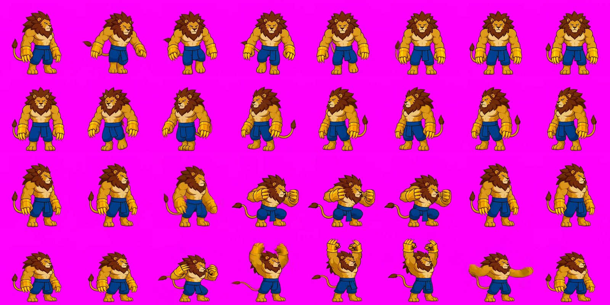
Frame mẫu của bốn clip, từ trên xuống: xoay tới chính diện, xoay sang trái, ngồi xổm, đẩy tay qua đầu. Gối và khuỷu do model vẽ lại nên không gãy.
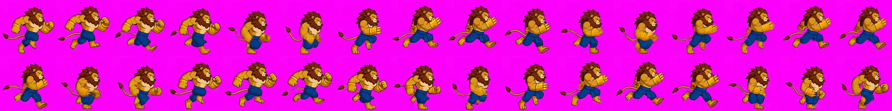
32 frame liên tiếp của clip chạy. Tay ngược chân, khuỷu gập đúng; một số frame nhoè vì tay chân chuyển nhanh.
Sư Vương (lion_brawler), thử nhiều pose
Hero cận chiến cỡ M, người thú sư tử với hai găng vuốt vàng. Idle và bài thử khớp chạy bằng rig v2 (có gối, háng, khuỷu); ba động tác còn lại đi từ rig sang ảnh pose rồi về lại rig, không có hình trung gian. Vòng chạy ghép từ bốn pose khoá. Mười hai ảnh, khoảng 0,172 USD; năm chuyển động và hai vệt vuốt 0 USD.
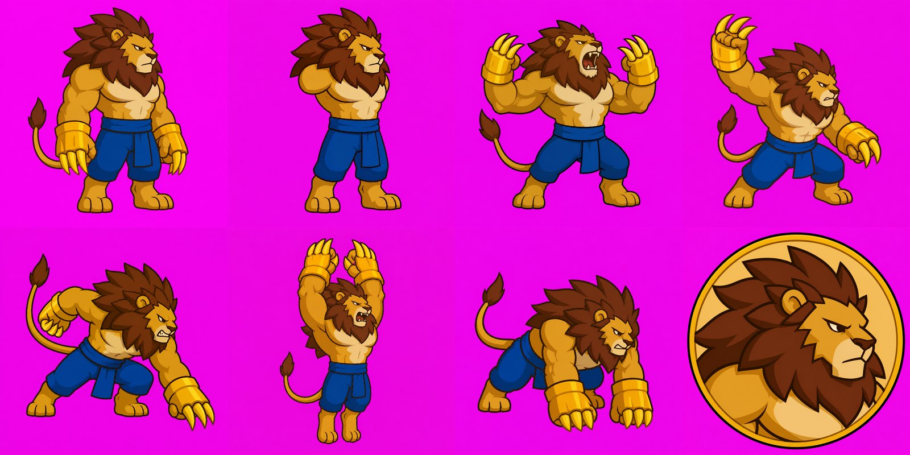
Hàng trên: master, thân sạch (bỏ tay và đuôi), pose gầm, pose lấy đà vung vuốt. Hàng dưới: pose kết thúc vung vuốt, hai pose dộng đất, icon. Tất cả là lần tạo đầu tiên.
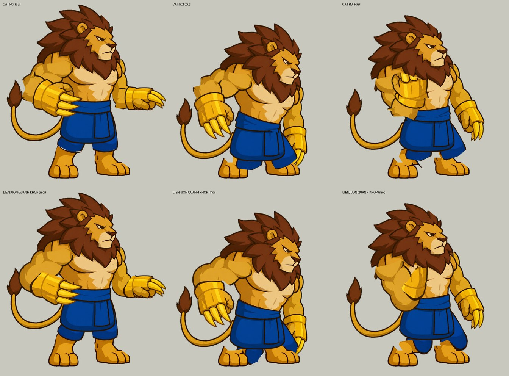
Cùng ba tư thế (gập khuỷu, ngồi xổm xoay eo, tay gập sát). Hàng trên: khớp cắt rời, hình gãy khúc. Hàng dưới: mỗi chi là một hình liền uốn quanh khớp. Mọi state rig của Sư Vương trên trang đã dùng bản uốn liền.
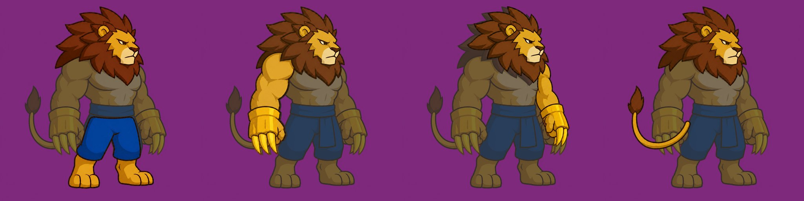
Lớp rời cho rig v2, chồng lên master mờ: hai chân, tay gần, tay xa, đuôi. Model xoá phần còn lại của master và giữ đầu làm mốc nên lớp nằm đúng chỗ; phần khuất được vẽ thật.
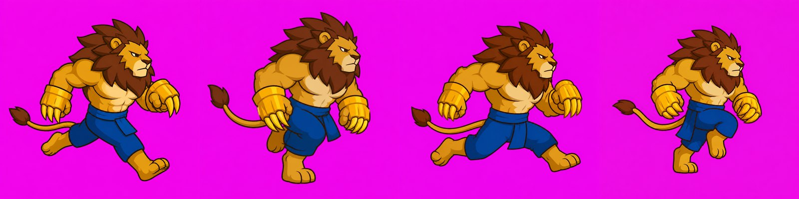
Bốn pose khoá của vòng chạy: chạm đất, qua chân, chạm đất đổi chân, qua chân. Cỡ giữa các pose căn tự động theo màu bờm.
Hero đánh xa cỡ M do Claude chọn và thiết kế bằng skill fal-image, rồi dựng rig ngay. Không có state video nào. Năm ảnh, khoảng 0,063 USD; ba chuyển động dưới đây 0 USD.
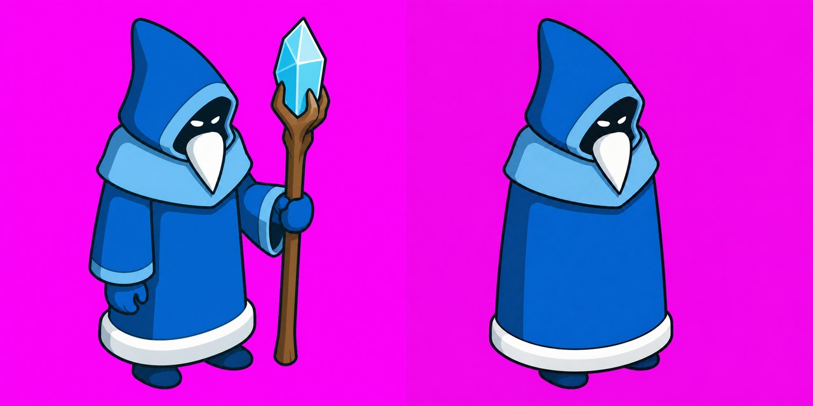
Trái: master_v01. Phải: ảnh thân sạch (plate) vẽ lại không trượng, không tay, dùng làm lớp thân của rig.
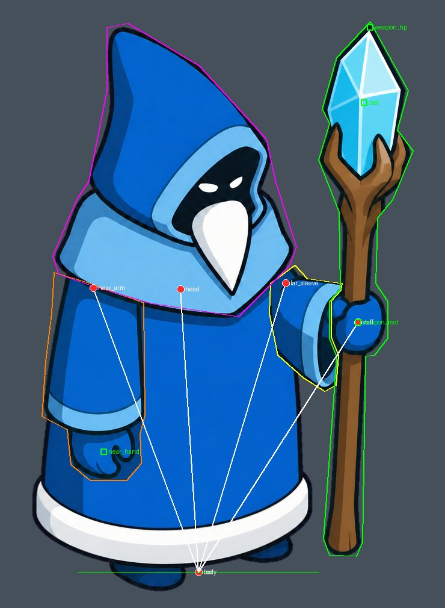
Rig: 5 lớp, 6 xương. Trượng là một xương riêng; tay áo xa co giãn theo tay cầm trượng; socket cast ở tinh thể là nơi đạn rời đi.
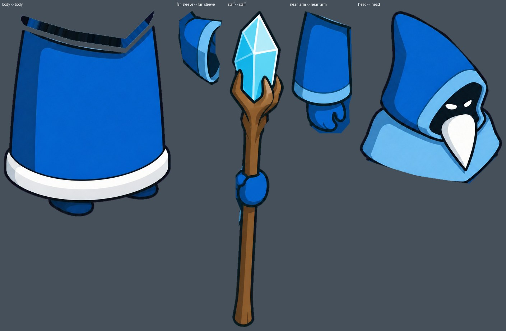
Năm lớp sau khi cắt.
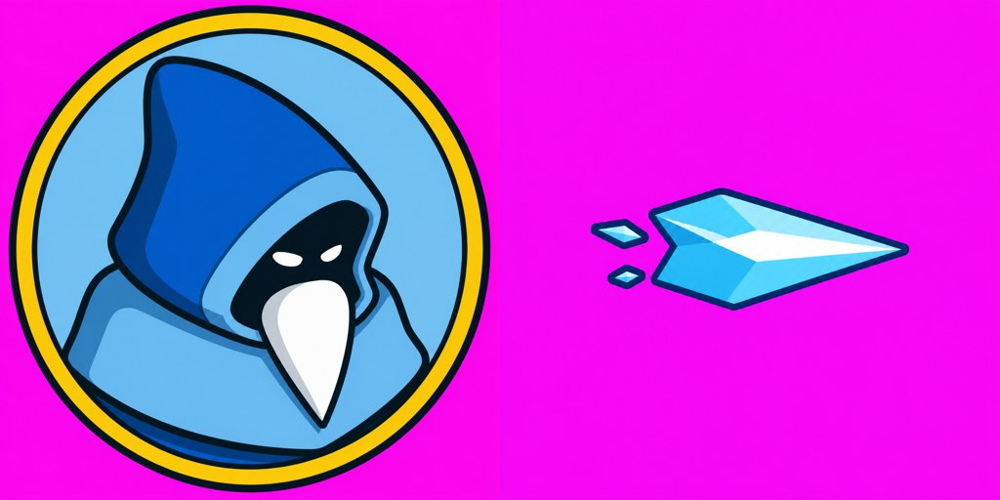
icon_v02 và projectile_v01.
Holy Commander: idle
Bản 24 hình này đã ghi đè bản 1 hình cũ. Thân nén nhẹ quanh chân, kiếm cắm yên, tay bám chuôi, áo choàng và mào dao động.
Holy Commander: level up
Bản rig là một động tác khác bản video: khuỵu, nhấc kiếm, cắm mạnh xuống. Không dùng ảnh pose nào.
Holy Commander: chém xéo
Bản rig đi master → pose p1 → pose p2 → master, không có hình trung gian, nên cứng hơn bản video. Vệt chém của bản rig lấy quỹ đạo kiếm từ rig; của bản video lấy từ điểm đánh dấu tay ở M01.
Holy Commander: rig
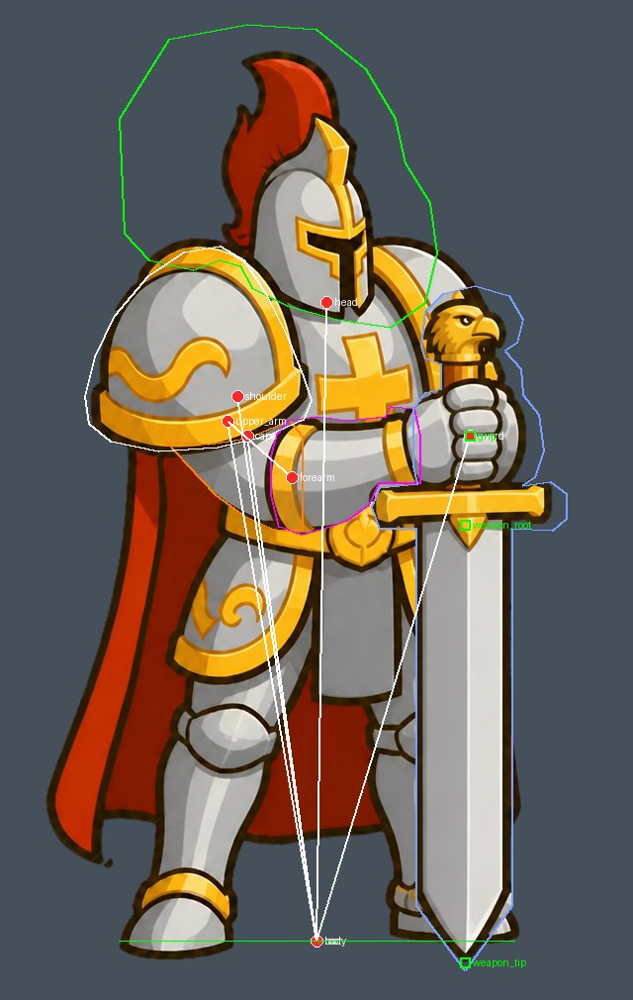
Khớp (đỏ), đa giác cắt lớp, socket gốc và mũi kiếm (xanh lá). Thân, đầu, giáp vai, áo choàng lấy từ ảnh thân sạch; tay và kiếm lấy từ master.
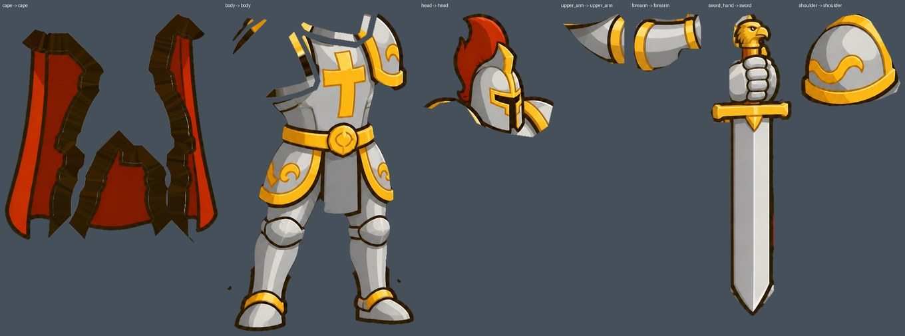
Bảy lớp sau khi cắt. Phần viền sẫm quanh áo choàng và dưới đầu là miếng vá nằm khuất dưới lớp khác.
Cần bạn quyết
Sư Vương: thiết kế và năm pose có đúng chất bạn muốn không? Các động tác pose-to-pose có đủ dùng, hay cần thêm pose giữa cho đoạn vung?
Băng Sư: thiết kế, icon, viên đạn và ba chuyển động đều đang chờ bạn duyệt; mọi lựa chọn là của Claude và đổi được.
Idle của Holy Commander: giữ bản 24 hình, hay trả lại bản 1 hình (còn trong git)? Biên độ thở và áo choàng chỉnh được bằng số trong anims/idle.json.
Chém xéo: bản pose-to-pose có đủ dùng không, hay thêm một pose giữa (khoảng 0,015 USD) cho đoạn vung?
Level up: dùng động tác cắm kiếm của rig, hay giữ bản video?